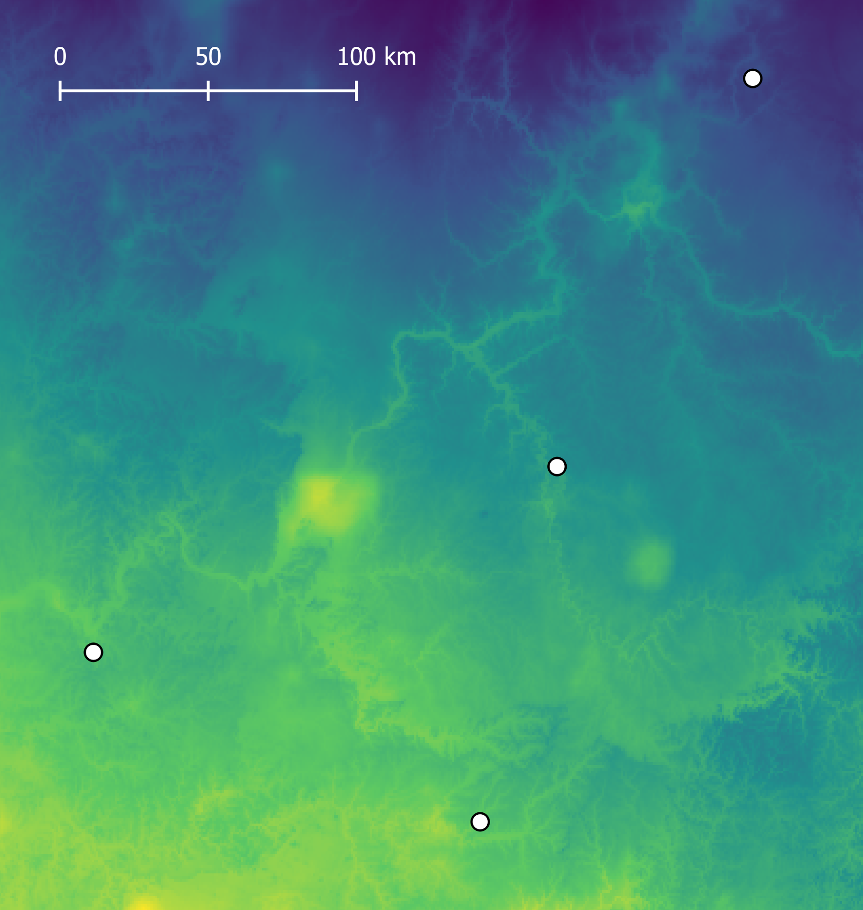
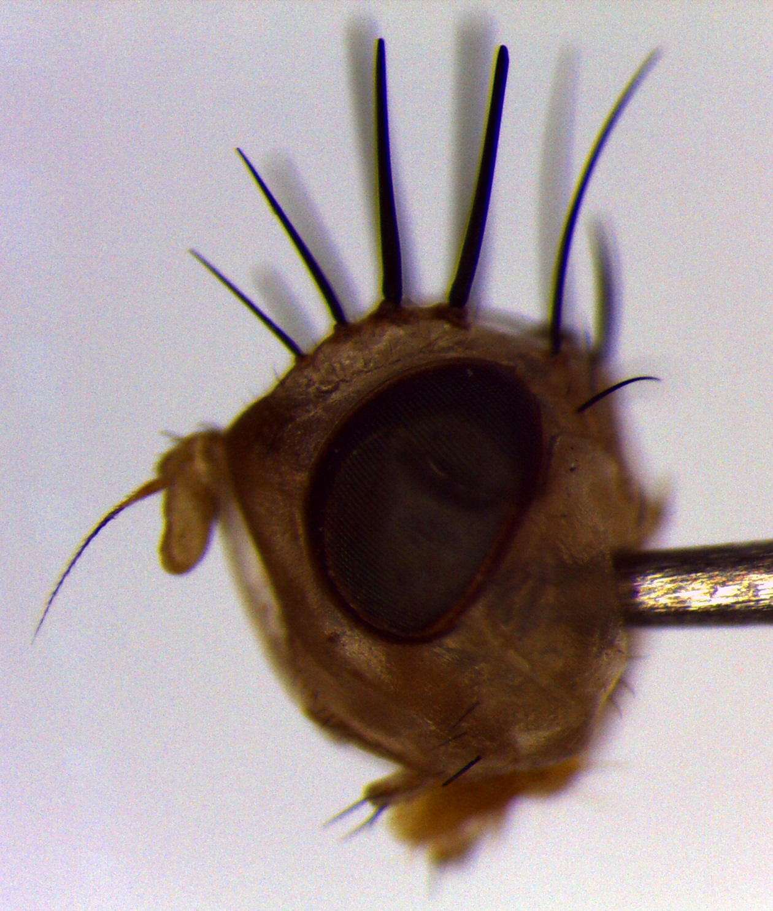

Marc Beer
Ph.D. student studying landscape genetics and genomics at Washington State University.
Landscape community genomics of Tasmanian marsupials
The disease-driven decline of the Tasmanian devil has led to behavioral and numerical changes in other community members, including mesopredator and prey species. Although the community ecological changes occurring in Tasmania are increasingly understood, it remains unclear how these changes may feed back into evolutionary dynamics occurring across space and time. The potential for evolutionary cascades in association with ecological cascades has been considered largely conceptually, but few studies have incorporated biotic factors such as densities of community members in spatially and environmentally explicit population genetics analyses.
Population genomics of the streamside salamander
 The relatively small geographic distribution of the streamside salamander (Ambystoma barbouri) has previously enabled the study of factors influencing species' range limits, and this species has served as a valuable system for studying the relationship between gene flow and local adaptation. With reduced representation genome sequences of individuals from across the geographic range, we can now look more closely at patterns of genetic diversity, gene flow, and adaptation among populations situated along environmental gradients, in areas of varying habitat suitability, and at different distances from the range core.
Undergraduate research: trait evolution in a genus of specialist herbivorous flies
When closely related taxa exist in sympatry, ambiguous sexual signals may lead to costly reproductive interference, including competitive intrasexual interactions among heterospecific individuals (e.g., male aggression) and the production of hybrid offspring with reduced fitness. Signaling traits thus represent targets of selection towards enhanced sexual isolation, with evolutionary trait divergence decreasing the likelihood of costly sexual interactions between species. While biologists have often explored reproductive trait divergence in species with partially overlapping geographic ranges, species in sympatry may be distinct in their patterns of habitat or resource use. Little-explored is the extension of these ideas to species that live not only in sympatry, but also in close association with a shared resource.
 Flies in genus Strauzia (family Tephritidae) typically specialize on different sunflower species (family Asteraceae), but there are two instances in which three Strauzia species share a single host sunflower species. This allows us to explore the potential role of resource sharing, and more generally the absence of habitat isolation, in the evolution of sexual signaling traits. Furthermore, the occurrence of two such cases in a single genus provides a unique opportunity to study how differences in the evolutionary history and ecology of each case may relate to observed patterns of sexual isolation and trait variation. During my undergraduate Honors independent research in Dr. Andrew Forbes' lab at the University of Iowa, I focused on quantifying intra- and inter-specific variation in the pronounced bristles present on male Strauzia heads, which are putatively important in pre-mating sexual interactions. We are currently extending this work to quantify variation in additional sexually dimorphic traits, such as wing shape and coloration, as well as to study how these traits have evolved in the context of the recently inferred phylogeny of Strauzia.